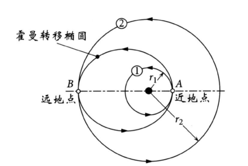

6.1 引言
轨道机动是使航天器从一个轨道转移到另一个轨道上，或者在轨道上的位置发生变化（轨道参数或者位置发生变化）。
轨道机动类型
- 连续轨道机动：持续施加推力改变轨道
- 脉冲轨道机动：瞬时改变速度矢量的大小和方向

6.2 脉冲机动
基本概念
脉冲机动是通过在轨火箭发动机点火实现瞬时改变速度矢量的大小和方向。在脉冲机动时，可以认为航天器的位置是固定不变的，只有速度发生变化。
假设条件：
- 发动机点火时间极短，位置变化可忽略
- 推力足够大，重力变化可忽略
- 速度变化瞬时完成
速度增量与燃料消耗关系
火箭方程推导
根据动量守恒定律，火箭发动机产生的推力为：
其中为燃料质量流率，为排气速度。
由牛顿第二定律：
联立得：
分离变量积分：
得到齐奥尔科夫斯基火箭方程：
比冲定义
比冲定义为：
其中为海平面重力加速度。
代入火箭方程得：
燃料消耗公式
由上式解出燃料质量消耗：
其中：
- ：消耗的燃料质量
- ：机动前航天器质量
- ：机动后航天器质量
物理意义
- 指数关系：燃料消耗与速度增量呈指数关系，小时近似线性
- 比冲影响：比冲越大，相同所需燃料越少
- 质量比：称为质量比，是衡量推进效率的重要参数
应用示例
例6.2：航天器初始质量 kg，比冲 s，需要 km/s的速度增量。计算所需燃料质量。
解：
燃料消耗分析
结论：太空任务中的速度增量需要仔细规划以使在轨载荷中的燃料质量最小化。多脉冲机动通常比单脉冲机动更省燃料。

6.3 霍曼转移
霍曼转移是在两个共面且有公共焦点的圆轨道间的能量最省的双脉冲机动。
基本霍曼转移

其中：
- ：在近地点A处的速度增量
- ：在远地点B处的速度增量
计算公式
对于从圆轨道1（半径）到圆轨道3（半径）的霍曼转移：
-
转移轨道2的参数：
-
各点速度：
-
速度增量：
例题
例6.1 一航天器位于480km至800km的轨道（轨道1）。求：
(1) 从近地点A处将航天器推入一480km至16000km的转移轨道（轨道2）所需要的速度增量
(2) 从转移轨道的远地点B处将航天器推入一高度16000km的圆轨道（轨道3）所需要的速度增量
解：
-
初始轨道1参数：
-
转移轨道2参数：
-
各点速度：
-
速度增量：
共轴椭圆轨道间的霍曼转移
对于两共轴椭圆轨道间的转移，需要比较不同转移路径的效率。

轨道方程：
近地点半径：
结论：若初始轨道为圆轨道，最有效率的转移椭圆轨道应止于外部椭圆目标轨道的远地点处；否则，通常从内部轨道动能最大的近地点处开始的转移轨道效率最高。
6.4 双椭圆霍曼转移
双椭圆霍曼转移：两椭圆中的每一个均与圆轨道中的一个相切，且两椭圆轨道亦相切于共同远地点B。
基本概念

速度增量计算
设：
其中，
霍曼转移的速度增量：
双椭圆转移的速度增量：
效率比较
若外圆目标轨道的半径小于内圆的11.9倍，则霍曼转移更省能量。若两者的比率超过15.6，则双椭圆转移更具优势。在两比率之间，对于大的远地点半径有利于双椭圆轨道转移，而小的半径值则有利于霍曼转移。
例题
例6.3 一半径7000km的地心圆轨道经双椭圆霍曼转移后，到达半径105000km的圆轨道。设第一个椭圆的远地点为210000km。计算出所需要总的速度增量，并将其与通常的单次霍曼转移相比较。
解：
-
轨道1（初始圆轨道）：
-
转移轨道2：
-
转移轨道3：
-
轨道4（目标圆轨道）：
-
速度增量：
-
霍曼转移比较：
结论：双椭圆转移所需速度增量略小于霍曼转移，但飞行时间更长。
6.5 调相机动
调相机动是一双脉冲霍曼转移，其离开并返回同一轨道，此时的霍曼转移椭圆轨道是一周期选定的调相轨道，以使航天器能够在规定的时刻内返回原来的主轨道。
应用场景
- 交会对接
- 追击
- 移位
调相轨道参数

调相轨道的周期：
调相椭圆轨道的长半轴：
其中为近地点半径，为远地点半径。
例题
例6.4 轨道1上两航天器分别位于点A和B点。在图示时刻，追击航天器位于A，执行调相机动，要在完成一圈调相轨道2后在A点追上目标。计算所需的总速度增量。
解：
-
轨道1参数：
-
目标航天器由B至A飞行时间：
-
调相轨道周期：
-
调相轨道长半轴：
-
速度增量计算：
6.6 共拱线的非霍曼转移
共拱线但不同偏心率的轨道间的转移，即两个轨道具有相同的拱线（近地点和远地点连线）但偏心率不同。
基本概念
共拱线轨道具有以下特点：
- 相同的拱线方向
- 相同的近地点和远地点方向
- 不同的偏心率
- 不同的轨道形状
转移策略
对于共拱线轨道间的转移，可以采用以下策略：
- 单脉冲转移：在拱线上的一点施加脉冲，同时改变轨道形状
- 双脉冲转移：在近地点和远地点分别施加脉冲
速度增量计算
设初始轨道参数为，目标轨道参数为。
在近地点处的速度增量：
在远地点处的速度增量：
效率分析
- 当时，需要在近地点加速，远地点减速
- 当时，需要在近地点减速，远地点加速
- 总速度增量：
应用场景
- 轨道形状调整
- 轨道周期调整
- 特定任务轨道设计
6.7 拱线转动
拱线转动是改变轨道近地点方向而不改变轨道形状（偏心率、半长轴不变）的机动。
基本概念
拱线转动改变的是轨道在空间中的方位，具体来说是改变近地点的方向（即改变近地点幅角），而不改变：
- 轨道形状（偏心率不变）
- 轨道大小（半长轴不变）
- 轨道倾角和升交点赤经
机动原理
拱线转动通过在轨道平面内旋转速度矢量来实现。设需要转动的角度为，则所需速度增量为：
其中为机动点处的速度。
机动点选择
为了最小化燃料消耗，拱线转动应在速度最小点进行：
- 远地点：速度最小，效率最高
- 近地点：速度最大，效率最低
计算公式
在远地点进行拱线转动时：
其中远地点速度：
应用场景
- 调整卫星地面轨迹
- 特定区域覆盖优化
- 太阳同步轨道调整
- 任务轨道优化
例题
例6.7 一地球卫星轨道参数为： km, 。需要在远地点将拱线转动。计算所需速度增量。
解：
- 计算远地点半径： km
- 计算远地点速度： km/s
- 计算速度增量： km/s
注意事项
- 拱线转动通常需要较大的速度增量
- 应尽可能与其他机动结合进行以节省燃料
- 对于大角度转动，考虑使用多次小角度转动
6.8 追击
在轨道机动中，霍曼转移与调相机动是能量效率高但需要一定前提条件的机动方法。追击或拦截轨道需要在给定的时间内由空间中的A点到达B点，这属于兰伯特问题。
追击策略
- 使用调相机动实现追击
- 使用兰伯特问题求解拦截轨道
例题
例6.9 如图所示，航天器B和C均位于地心椭圆轨道1上。真近点角，。在图示时刻，航天器B进行脉冲机动，进入轨道2上并于1小时后准确拦截C。计算出拦截轨道2的参数和以及此次追击机动所需要的总的速度增量。
解：
-
轨道1参数：
-
位置和速度矢量（计算过程略）
-
兰伯特问题求解得拦截轨道参数：
-
速度增量：
6.9 非共面机动
有一个公共焦点的两轨道并不一定共面。由于共有的焦点位于每一个轨道平面内，所以也必位于两轨道的交线上。若一航天器要通过一次脉冲机动由轨道1平面变换为轨道2平面，则其必须在两轨道的交线处施加速度增量。
轨道面变换策略

-
策略1：在远地点或近地点轨道面变换的同时速度亦发生变化
其中为两速度矢量间的夹角。
-
策略2：先旋转速度矢量，然后再改变其大小
-
策略3：先改变速度，然后再旋转速度矢量
结论：轨道面变换的同时速度亦发生变化的机动为效率最高的一种。
轨道倾角与发射参数关系
轨道倾角、发射场纬度和发射方位角三者间的关系：
对于不同发射方向：
- 向东发射：，A0^\circ90
- 向东南发射：在到之间
关系：
例题
例6.11 卫星在高度300km，倾角的近地圆轨道上运行，计算出将其转移至地球同步卫星轨道所需要的速度增量。将在高轨道处变换倾角所需速度增量与在低地轨道变换时所需要的速度增量相比较。
解：
-
轨道参数：
-
霍曼转移轨道：
-
地球同步轨道速度：
-
不同机动方案：
-
方案1：在远地点先改变方向然后改变大小
-
方案2：在远地点同时改变速度大小和方向
-
方案3：在近地点先改变方向然后改变大小
-
方案4：在近地点同时改变大小和方向
-
结论：轨道面变换点应选取在距离引力中心尽可能远处（远地点），此处的速度最小。
例6.12 上例中，若在霍曼转移椭圆轨道的近地点B处先进行部分轨道面变换，剩余的于远地点C处进行。计算出取最小值时的。
解：
设近地点变换角度为，则：
求的最小值，解得：
这种机动方式比前述近地点机动方案中所得的最小结果要小30.7%；比第二种机动方案的结果小0.57%。
本章小结
- 脉冲机动：瞬时改变速度矢量，燃料消耗与速度增量呈指数关系
- 霍曼转移：两共面圆轨道间能量最省的双脉冲转移
- 双椭圆霍曼转移：适用于大半径比情况，可节省能量但增加飞行时间
- 调相机动：用于调整航天器在同一轨道上的相对位置
- 追击：使用兰伯特问题求解拦截轨道
- 非共面机动：轨道面变换，应在远地点进行以节省燃料
关键公式总结
- 燃料消耗：
- 霍曼转移速度增量：，
- 轨道面变换：（纯轨道面变换）
- 发射参数：